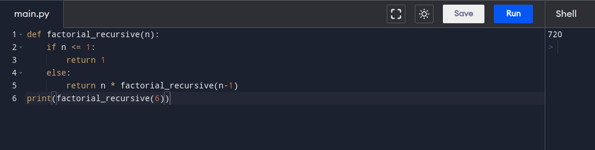

def factorial_recursive(n):
if n <= 1:
return 1
else:
return n * factorial_recursive(n-1)
print(factorial_recursive(6))
n!=n⋅(n−1)!
T(n)=n⋅T(n−1)
T(n)=a⋅T(b/n)+f(n)
La expresion factorial tiene que tanto el valor b como el valor a, son expresados por una variable n, por lo que el metodo maestro no aplica. Aun asi, de la expresion se puede deducir que el algoritmo tarda n(n-1)!
 back